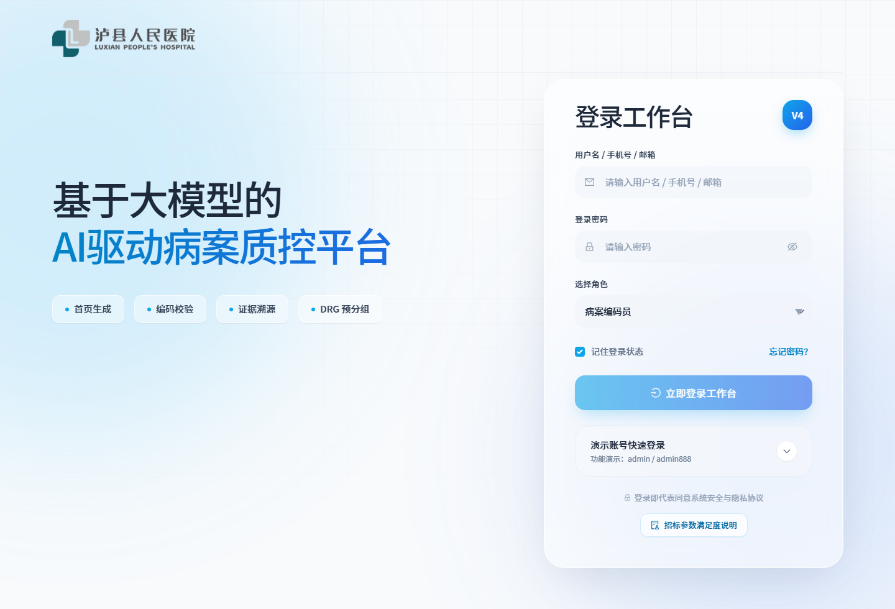
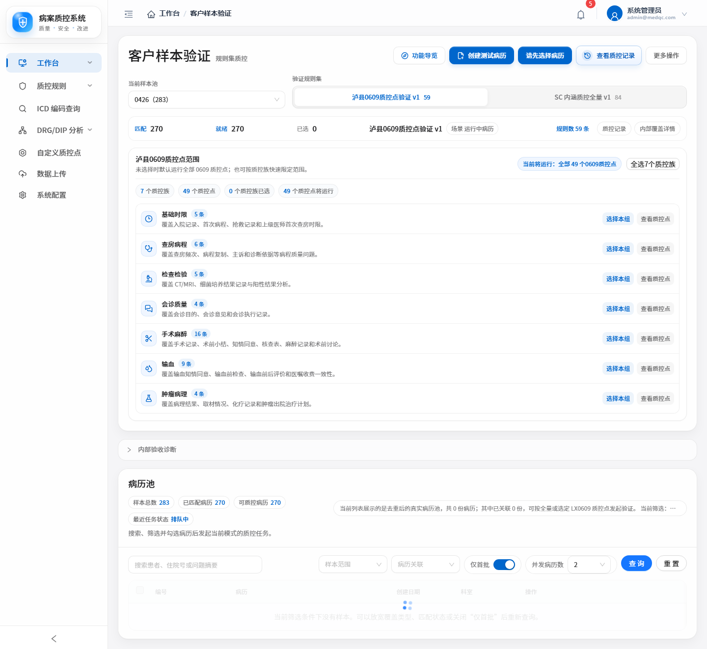
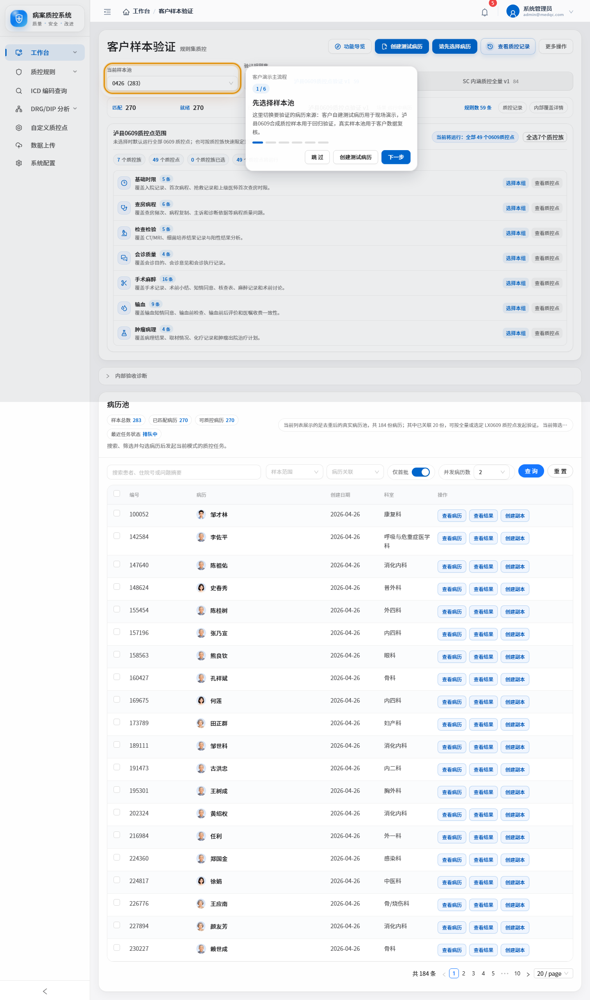
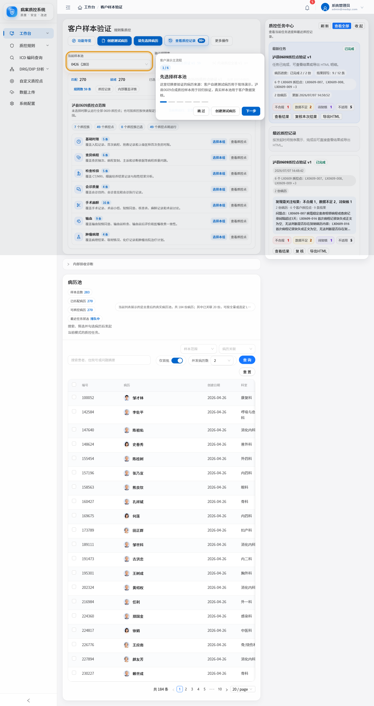
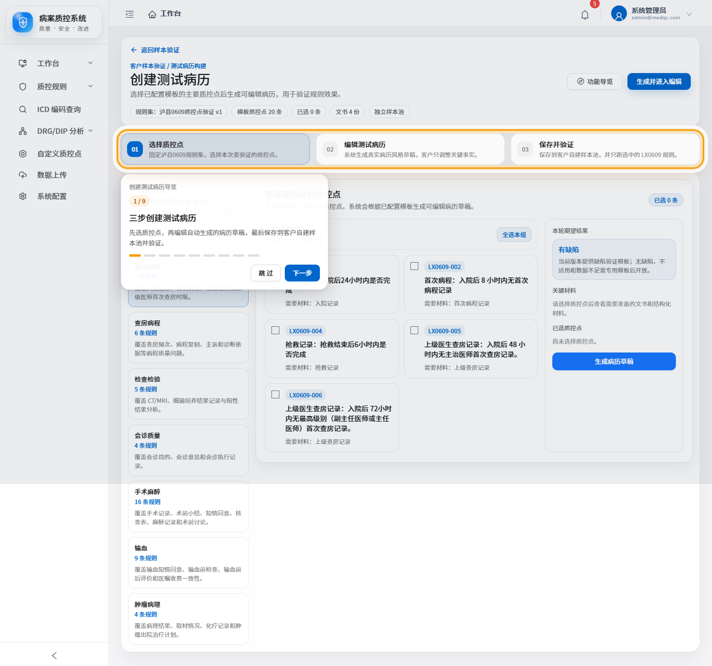
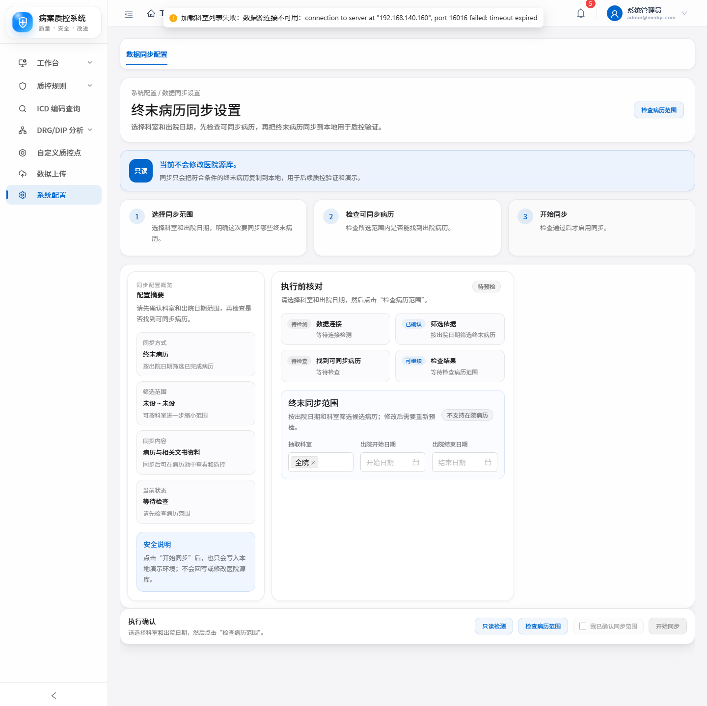

0推荐交付格式
本手册建议以 离线 HTML 作为主格式。HTML 可以包含截图、目录、步骤卡片和提示信息，客户机无需安装 Word，也能直接用浏览器打开。
便于离线查看、复制链接路径、嵌入截图，也适合随客户包一起交付。后续如需打印，可在浏览器中直接另存为 PDF。
如果需要盖章、归档、正式培训材料或发给非系统使用者，再从 HTML 内容派生 PDF 或 DOCX。
1登录与入口
打开工作站登录页，使用演示账号登录后会默认进入客户样本验证页面，并触发功能导览。
-
打开登录页浏览器访问 http://客户机IP:3000/workstation-v4/login。
-
输入演示账号账号 admin，密码 admin888。
-
进入客户样本验证登录后进入客户样本验证页。也可直接访问 /workstation-v4/customer-sample-validation。

2客户样本验证页
客户样本验证页用于选择样本池、限定泸县0609质控范围、选择病历、发起质控并查看任务记录。


3选择泸县0609质控范围
泸县0609支持两种运行方式：全量运行全部客户质控点，或只勾选本次要验证的质控族/质控点。
| 模式 | 适用场景 | 用户应看到 |
|---|---|---|
| 全量0609 | 需要一次性检查全部泸县0609质控点。 | 范围显示为全量0609规则集，不显示 scoped run。 |
| 按质控族/质控点运行 | 演示、复核或快速验证某一类问题，例如会诊、输血、手术麻醉。 | 范围显示已选质控族和客户质控点数，结果只出现所选 LX0609 质控点。 |
4选择病历并开始质控
在病历池中勾选一份或多份病历后，页面底部会出现固定操作条，展示已选病历数和当前质控范围。
-
选择样本池可选择 0426、泸县0609真实结构合成样本 v2、客户自建测试病历等样本池。
-
勾选病历病历列表显示编号、病历、创建日期、科室、验证范围和操作。点击左侧复选框选择。
-
点击开始质控底部操作条出现后，点击 开始质控。如果未选择病历，系统会提示先选择病历，不会直接提交空任务。
5查看任务中心与质控记录
“质控记录”是查看当前任务和历史任务的高频入口。运行中的任务可以看进度，已完成任务可以直接查看结果或导出 HTML。
显示排队中、病历准备中、规则执行中、结果汇总中、已完成或失败，并展示已完成病历数、返回结果数和状态分布。
按时间倒序展示最近任务，摘要包括病历数、客户质控点数、结果数和主要问题点。

6查看质控结果
质控结果以客户质控点为主线展示，重点看状态、质控结论、关键证据和处理建议。
| 状态 | 含义 | 处理建议 |
|---|---|---|
| 不合规 | 系统根据当前证据判断存在质控问题。 | 优先复核原文证据，确认是否需要整改或补记。 |
| 合规 | 当前证据满足质控要求。 | 一般无需处理。 |
| 不适用 | 该病历没有触发本质控点的适用条件。 | 不进入缺陷判断，也不应混作合规。 |
| 数据不足 | 发现相关事件，但缺少完成自动判定所需字段或文书。 | 补齐数据或由质控员人工复核。 |
| 待复核 | 语义判断或证据不稳定，需要人工确认。 | 结合原文和临床语境复核，不作为自动扣分结论。 |
| 未执行/技术异常 | 规则没有执行或执行过程中出现技术问题。 | 检查任务、模型服务或后端日志后重试。 |
7导出 HTML 明细
已完成任务支持导出 HTML 明细，适合客户离线查看、留档或转发给科室复核。
-
从任务中心导出在历史任务中点击 导出HTML，无需先打开结果。
-
从结果页导出打开任务结果后，在导出菜单选择 导出 HTML 明细。
-
查看导出文件HTML 文件按病历分组展示质控点、状态、结论、关键证据和建议，不导出完整病历全文。
8创建测试病历
“创建测试病历”用于按泸县0609质控点生成可编辑的演示病历，并保存到客户自建测试病历池。
-
选择质控点先选规则族，再勾选本次需要验证的 LX0609 质控点。每个规则族支持全选，也支持多组选中。
-
生成并编辑病历系统生成多文书结构病历。用户可以编辑文书内容，新增或删除文书和医嘱。
-
保存并验证保存后进入客户自建测试病历池，验证时只跑用户选中的 LX0609 质控点。

9同步客户病历
客户样本验证支持通过模板导入病历 ID，匹配源库病历后同步文书。系统配置页则用于终末病历按出院日期同步。
客户样本池模板同步
-
下载并填写模板推荐优先填写就诊 ID 或住院流水号；如没有，再补充病案号、住院号、患者姓名辅助匹配。
-
导入样本 ID导入成功后页面应显示已导入数量，并进入匹配源库病历步骤。
-
匹配并同步文书匹配到病历后点击开始同步，查看同步进度和失败原因。
系统配置中的终末病历同步
该页面用于按出院日期、科室同步终末病历，不是“全域源库同步”入口。同步前应先检查病历范围，确认找到可同步病历后再开始同步。

10常见问题与处理建议
1. 点击开始质控后看不到进度怎么办？
打开右上方 质控记录，查看当前任务状态。如果任务长时间停留在执行中，联系实施人员检查后端、模型服务或任务队列。
2. 为什么有些结果是“数据不足”？
说明系统发现了相关事件，但缺少自动判定需要的字段、时间或文书。这不是正式缺陷结论，需要补齐数据或人工复核。
3. 为什么有些质控点“不适用”？
说明病历没有触发该质控点的适用条件，例如没有输血事实时，输血类规则应显示不适用。
4. 多病历一起质控怎么区分结果？
结果会按病历分组，并在任务摘要中展示病历数、客户质控点数和主要问题点。导出 HTML 明细时也会按病历分组。
5. 可以把合成样本通过率当成真实样本准确率吗？
不可以。合成或自建测试病历只代表演示和回归链路通过，不能替代真实客户病历的人工标注 Golden Set。
6. 哪些内容不应该展示或导出？
不得展示或导出 prompt、raw_response、embedding、medical_text、record_content、documents、bundle、完整病历全文等敏感或内部字段。